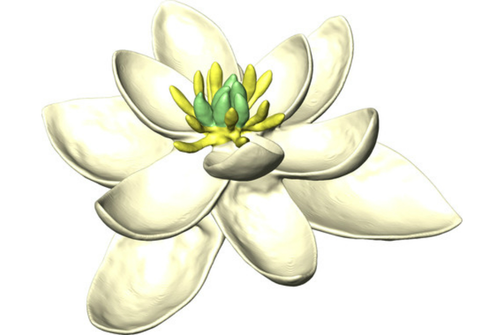
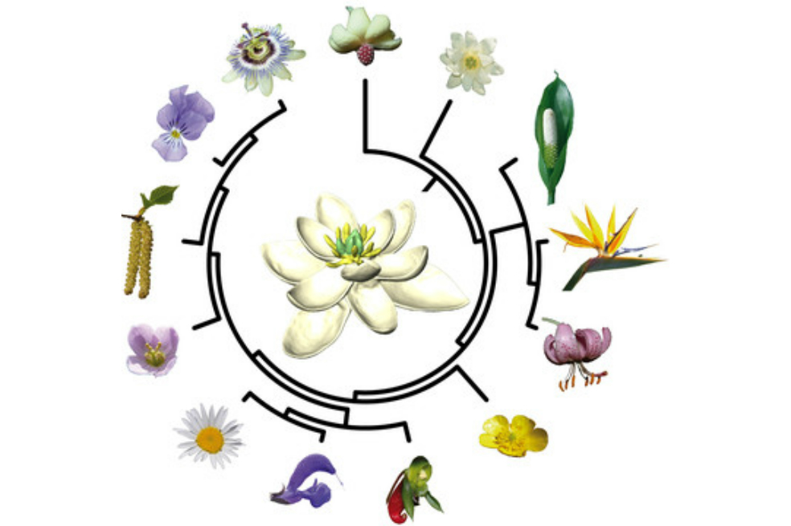

Científicos descubren cómo fue la primera flor
La mayor recopilación de rasgos de flores modernas revela las características que poseía el ancestro común de todas las plantas con flor hace 140 millones de años. El trabajo indica que la antigua flor de angiosperma era bisexual y radialmente simétrica.
¿Qué apariencia tenían las flores hace millones de años? Esa es la pregunta que se ha hecho un grupo internacional de científicos que ha logrado reconstruir el ancestro de la flor de angiosperma. El estudio, publicado esta semana en la revista Nature Communications, presenta esta semana el aspecto del antepasado único de todas las plantas con flor que, según afirman estudios previos, existió hace más de 140 millones de años.
La nueva investigación, liderada por Hervé Sauquet de la Universidad de París-Sur (Francia), describe la antigua flor como una planta con órganos florales masculinos (estambres) y femeninos (carpelos), así como con múltiples espirales de pétalos organizados en grupos de tres.
“Reconstruimos el ancestro de la flor de angiosperma como bisexual y radialmente simétrico, con más de dos verticilos con tres órganos periantos separados cada uno, más de dos verticilos de tres estambres y más de cinco carpelos separados dispuestos en forma de espiral”, asegura el equipo en el trabajo.

Por otro lado, “la investigación no solo muestra un retrato más claro de la flor ancestral, sino que también indica que la mayoría de las plantas existentes son el resultado de la simplificación de aquel modelo antiguo durante los primeros 20 millones de años de evolución floral”, explica Sauquet.
Los científicos ha logrado reconstruir el ancestro de la flor de angiosperma de más de 140 millones de años. Por ello, a pesar de las similitudes con algunas plantas existentes, no hay especies vivas que compartan esta combinación exacta de características. "Todas las plantas con flor han evolucionado y cambiado desde aquel ancestro, así funciona la evolución", indica el investigador.
Para obtener estos resultados, los expertos compararon una base de datos que recoge los principales rasgos de las flores actuales (en base a un total de 21 características independientes como el sexo funcional de la flor o la posición de los ovarios) con distintos modelos evolutivos de las mismas.
Así, consiguieron crear un escenario más preciso sobre la evolución de las plantas con flores, que hoy suponen aproximadamente el 90% de las plantas del mundo, y asentar las bases para futuras investigaciones sobre las angiospermas.
El conocimiento sobre el origen y evolución de la flor de angiospermas continúa siendo escaso. “Cómo era polinizada, su tamaño, color, fragancia, qué clase de fruto producía tras su fertilización, qué clase de planta la producía, qué antigüedad tiene exactamente y dónde se localizaba en la tierra son algunas características que quedan por descubrir”, concluye Sauquet.
A quién no le han regalado un ramo de flores alguna vez: por su aniversario, la licenciatura, en el día de su boda, el nacimiento de un hijo, o incluso, en su funeral. Por tradición se sabe que la flor transmite una intención delicada, atrae las miradas de los presentes y produce una sensación de felicidad en la persona que la recibe. Ahora bien ¿de dónde surge tal convicción? Desde hace algunos años, diversos experimentos dentro y fuera de las paredes de un laboratorio descubren el impacto que producen las flores en la conducta, el pensamiento y el estado de ánimo de las personas.
La psicóloga Jeannette Haviland-Jones, de la Universidad de Nueva Jersey, explica que el cultivo de flores y plantas ornamentales comenzó hace más de 5000 años.
Las plantas sintetizan unas sustancias especiales conocidas como aceites esenciales que emplean para protegerse de algunas enfermedades, ahuyentar depredadores o atraer insectos que ayuden en la polinización. Estas sustancias son mezclas de varios compuestos químicos que dan el aroma característico a las flores, frutos, corteza, hojas y semillas.
En muchos casos, las plantas concentran estas sustancias tanto en las flores como en los frutos, que actúan como mensajeros químicos. El aroma viaja por el aire donde es detectado por animales específicos.
En el caso de las plantas, las partes que las integran son: las raíces, el tallo, las hojas, las flores y los frutos. Aunque se debe tener en cuenta que no todas las plantas dan flor y por tanto no darán frutos ni semillas, como es el caso de las briofitas (como los musgos) y pteridofitas (como los helechos); en aquellas que sí florecen suele ser precisamente la flor la parte más llamativa de la planta. ¿Sabes por qué?
Porque la flor es el órgano reproductor de la planta, donde se almacena el polen, un polvito amarillo que hace posible la reproducción de la especie. Al no poder desplazarse, la planta debe acudir a otras estrategias para transportar el polen y lograr fecundar otras flores; en algunos casos el viento lleva las partículas por el aire de una flor a otra logrando la polinización.
Sin embargo las flores requieren un apoyo extra, por eso se ingeniaron otras formas para llamar la atención de los insectos y lograr que se acerquen lo suficiente para que el polen se adhiera a sus cuerpos; sin saberlo los insectos continúan su recorrido por otros jardines transportando el polvito de un lugar a otro y logrando la polinización de las flores. Las estrategias más efectivas para atraer a las aves e insectos son la vistosidad de formas, colores y ricos olores, así como la producción de néctar (líquido dulce) que sirve de alimento a estas especies.